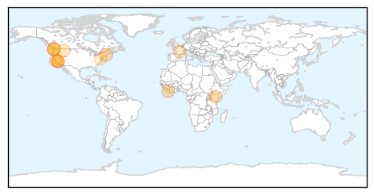
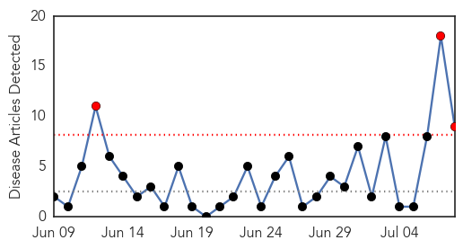
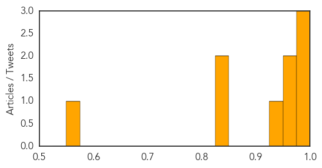

Measles
30-Day Web Trend
2 alerts, 3 warnings

30-Day Twitter Trend
0 alerts, 0 warnings

Article Locations
Article Confidences

Top Articles:
- 0.996
- World: West and Central Africa Region Weekly Humanitarian Snapshot (30 June -06 July 2015)
- 0.981
- Measles virus tracked though genomic testing finds one overseas visitor caused 61 B.C. cases
- 0.967
- The anti-vaxxer threat: A recent study highlights the dangers of science denialism
- 0.923
- Measles kills first patient in 12 years
- 0.891
- Washington Woman Dies from Measles, First Death in 12 Years
- 0.883
- Washington woman who died of measles had been vaccinated
- 0.842
- The Woman Who Died Of Measles Had Been Vaccinated Against It
- 0.836
- Risk of preventable disease is much greater than any risk posed by vaccines
- 0.797
- Measles growing fatal: A woman died in Washington
- 0.772
- Despite lack of evidence, 20% of Ontarians believe some vaccines cause autism: new poll
- 0.741
- The U.S. Just Reported Its First Confirmed Measles Death in 12 Years
- 0.737
- Practices and hesitancy among general physicians in France
- 0.716
- Lax immunization laws in 18 states need to change
- 0.632
- First measles death in United States in 12 years
Top Tweets:
-
No tweets found for Jul 08, 2015
West Nile Virus
30-Day Web Trend
3 alerts, 0 warnings

30-Day Twitter Trend
4 alerts, 0 warnings

Article Locations

Article Confidences
Top Articles:
- 0.993
- First Human Case of West Nile This Year
- 0.977
- Montana reports first human West Nile virus case of 2015
- 0.976
- West Nile Virus vaccine to enter safety trials in humans
- 0.973
- Year’s third case of West Nile virus confirmed in Oklahoma
- 0.956
- Take action against West Nile threat
- 0.934
- West Nile virus vaccine in horses
- 0.830
- First Colorado case of West Nile in county
- 0.825
- First mosquitoes test positive for West Nile in Colorado this year
- 0.570
- Bird in Benicia Tested Positive for West Nile Virus
Top Tweets:
- 0.580
- Flavivirus news: West Nile virus detected in Minnesota - MinnPost: MinnPostWest Nile virus dete... http://t.co/K6Si6wgxTM pathogenposse
- 0.575
- Flavivirus news: West Nile Virus facts - WCVB Boston: WCVB BostonWest Nile Virus factsWCVB Bost... http://t.co/oK3Lms5vOE pathogenposse